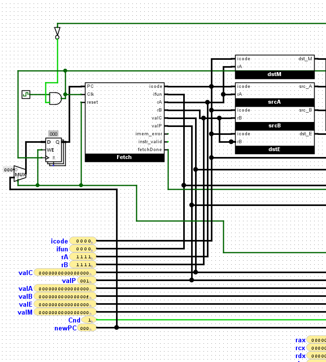

Projects
RISC-V CPU

Worked in a 3 person team to develop a fully-functioning CPU in Logisim using logic gates.
Designed CPU to support 9 different instructions from the RISC-V instruction set architecture
Technologies Used: Logisim

Pantry Pal is a full stack application that allows users to type ingredient names into a search bar, and the app will return recipes that contain those ingredients.
Users can create an account to save those recipes and view them at any time using the "My Recipes" tab.
I created this app because I don't know what to do with what I buy at the grocery store.
Technologies Used: Python, Flask, PostgreSQL, SQLAlchemy, Jinja
Developed a Wordle clone using Java and JavaFX for the GUI
Included save and load buttons to save the current game and load that save anytime using File IO
Technologies Used: Java, JavaFX